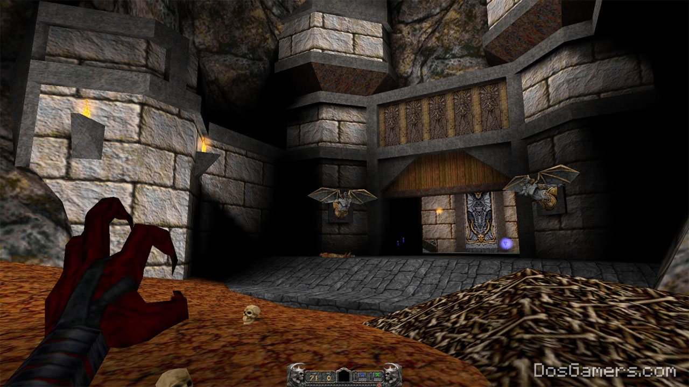
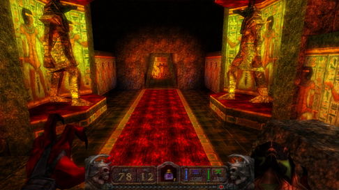

| Descripción |
| Contents |
|---|
El modding es una práctica software, ampliamente presente en el mundo de los videojuegos, que busca realizar modificaciones a un software que ha sido liberado previamente con el fin de añadir o mejorar características del producto. Estas modificaciones van guiadas por la creatividad y la innovación en los equipos de desarrollo. Obteniendo así productos abiertos a nuevos dominios, con mejor jugabilidad, historias nuevas y mejoras en la compatibilidad.
 
Ejemplo: Mejora en texturas e iluminación
Aunque en la web se encuentren muchos casos de éxito de Mods, es una realidad que muchos proyectos de modding fracasan en su desarrollo. Algunas causas de fracaso en un proyecto de modding vienen dados por problemáticas presentes en comunidades abiertas de trabajo, por ejemplo: inconvenientes en la comunicación, ausencia de información útil para el manejo del proyecto o de definición de tareas y roles necesarios para el desarrollo. Se busca guiar a los desarrolladores de esta práctica en la obtención de mejores resultados en sus proyectos. |